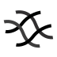
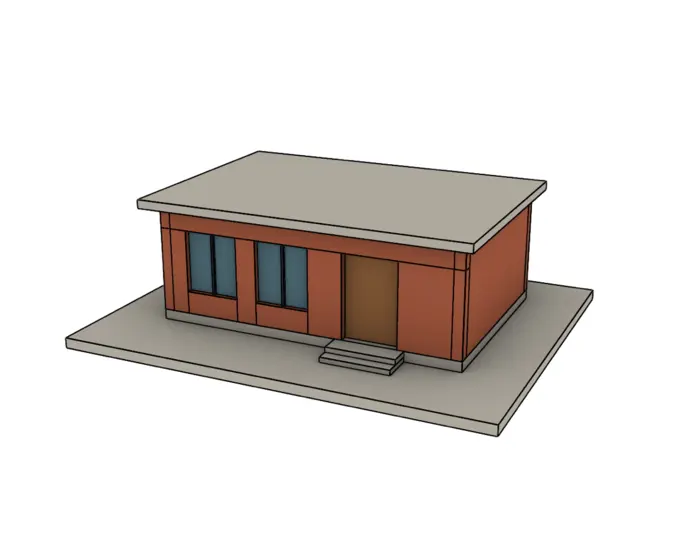

Model
This computer
Cloud
OpenAI
Google
xAI
Black Forest Labs
Output size
Scene guidance
- Reference
- Rhino preview image
- Prompt
- Preset instructions and your optional prompt
- Rhino context
- Camera, framing, units, active clipping planes and material properties

Recent renders